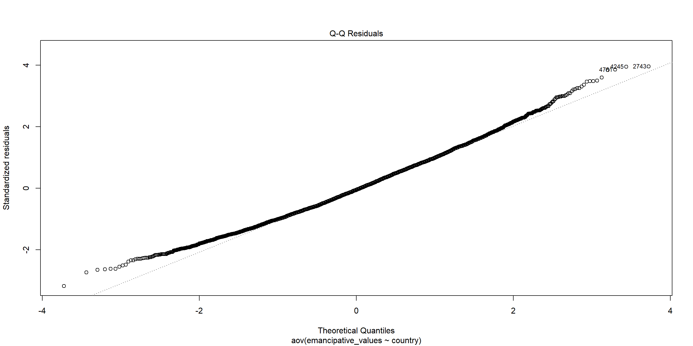
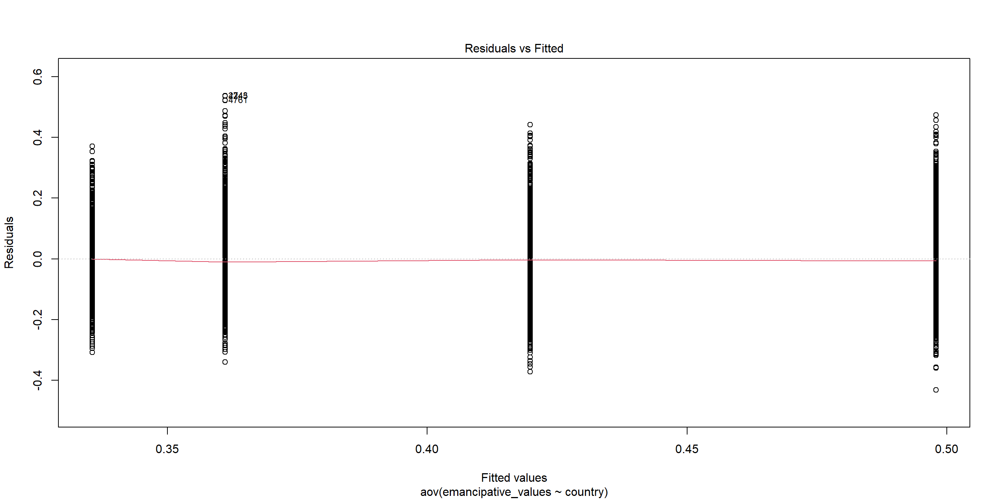

# import tidyverse library
library(tidyverse)
# read the CSV with WVS data
wvs_cleaned <- read_csv("data-output/wvs_cleaned_v1.csv")
# Convert categorical variables to factors
columns_to_convert <- c("country", "sex", "marital_status", "urban_rural", "income_level", "education", "trust_people")
wvs_cleaned <- wvs_cleaned |>
mutate(across(all_of(columns_to_convert), as_factor))
# put income_level in a natural low-to-high order (instead of alphabetical)
wvs_cleaned <- wvs_cleaned |>
mutate(income_level = factor(income_level, levels = c("Low", "Medium", "High")))
# peek at the data, pay attention to the data types!
glimpse(wvs_cleaned)Session 4: Basic Inferential Stats in R
Bella Ratmelia
Today’s Outline
Today is really about With these variables that I have, which test do I reach for?
- Both categorical → chi-square
- Both continuous → correlation
- Categorical (2 groups) + continuous → t-tests
- Categorical (3+ groups) + continuous → ANOVA
Refresher: Data Distribution
The choice of appropriate statistical tests and methods often depends on the distribution of the data. Understanding the distribution helps in selecting the right test and judging its validity.

Refresher: Research Variables
Dependent Variable (DV)
The variables that will be affected as a result of manipulation/changes in the IVs
- Other names for it: Outcome, Response, Output, etc.
- Often denoted as \(y\)
Independent Variable (IV)
The variables that researchers will manipulate.
- Other names for it: Predictor, Covariate, Treatment, Regressor, Input, etc.
- Often denoted as \(x\)
Naming your DV and IV (and their data type) is the first step in the whole process. Do this before you write a single line of code (or ask an AI for any).
Choosing a test from your variables
Almost every test today comes down to reading the types of your variables :
| Dependent variable (Y) | Independent variable (X) | Test |
|---|---|---|
| Categorical | Categorical | Chi-square test of independence |
| Continuous | Continuous | Correlation (Pearson / Spearman / Kendall) |
| Continuous | Categorical, 2 groups | t-test |
| Continuous | Categorical, 3+ groups | ANOVA |
Remember, you are responsible for your work. “Because Claude/ChatGPT told me this is the answer” is not a defensible answer when your professor asks you about your analysis.
Checklist when you start RStudio
Go to the folder where you put your project for this workshop
Find a file with
.Rprojextension - this is the R project file that holds all the information about your project.

- Double click on the file. Rstudio should launch with your project loaded!
Optional (Though best practice):
- Make sure that
Environmentpanel is empty (click on broom icon to clean it up). - Clear the
ConsoleandPlotstoo.
Load our data for today!
Let’s create a new R script called session-4.R, and then copy the code below to load our data for today. This code uses read_csv from readr package (part of tidyverse) to load our cleaned CSV (from the first checkpoint)
Both categorical → The \(X^2\) test
Where we are right now
| Y | X | Test |
|---|---|---|
| Categorical | Categorical | ← Chi-square |
| Continuous | Continuous | Correlation |
| Continuous | Categorical (2) | t-test |
| Continuous | Categorical (3+) | ANOVA |
Chi-square test of independence
The \(X^2\) test of independence evaluates whether there is a statistically significant relationship between two categorical variables.
This is done by analyzing the frequency table (i.e., contingency table) formed by two categorical variables.
Example: Is there a relationship between education level and income_level in our WVS data?
Typically, we can start with the contingency table first, and then the visualization
Chi-square test of independence - visualizing data
We can use percent-stacked bar chart to visualize this (remember from last week!)

Chi-Square: Sample problem and results
Is there a relationship between education level and income level?
\(H_0\): Education level and income level are independent (no association).
\(H_1\): Education level and income level are not independent (associated).
Pearson's Chi-squared test
data: table(wvs_cleaned$education, wvs_cleaned$income_level)
X-squared = 318.06, df = 4, p-value < 2.2e-16- X-squared = the coefficient
- df = degree of freedom
- p-value = the probability of getting more extreme results than what was observed. Generally, if this value is less than the pre-determined significance level (also called alpha), the result would be considered “statistically significant”
Given the hypotheses above, how would you narrate this result in your report?
Reporting χ² in APA style
Report the statistic with its degrees of freedom and sample size, then the value and p:
\[\chi^2(4,\ N = 5102) = 318.06,\ p < .001\]
df(4) andX-squared(318.06) come straight from the test output- \(N\) (5102) is your total number of observations
- For a table with \(r\) rows and \(c\) columns, \(df = (r-1)(c-1)\)
Both continuous → Correlation
Where we are right now
| Y | X | Test |
|---|---|---|
| Categorical | Categorical | Chi-square |
| Continuous | Continuous | ← Correlation |
| Continuous | Categorical (2) | t-test |
| Continuous | Categorical (3+) | ANOVA |
Correlation
A correlation test evaluates the strength and direction of a linear relationship between two variables. The coefficient is expressed in value between -1 to 1, with 0 being no correlation at all.
Pearson’s \(r\) (r)
- Measure the association between two continuous numerical variables
- Sensitive to outliers
- Assumes normality and/or linearity
- (most likely the one that you learned in class)
Kendall’s \(\tau\) (tau)
- Measure the association between two variables (ordinal-ordinal or ordinal-continuous)
- less sensitive/more robust to outliers
- non-parametric, does not assume normality and/or linearity
Spearman’s \(\rho\) (rho)
- Measure the association between two variables (ordinal-ordinal or ordinal-continuous)
- less sensitive/more robust to outliers
- non-parametric, does not assume normality and/or linearity
For more info, you can refer to this reading: Measures of Association - How to Choose? (Harry Khamis, PhD)
Correlation: Sample problem and result
RQ: Is there a significant correlation between emancipative values and secular values?
\(H_0\): There is no linear correlation between emancipative and secular values (\(\rho = 0\)).
\(H_1\): There is a linear correlation between emancipative and secular values (\(\rho \neq 0\)).
As both variables are numerical and continuous, we can use pearson correlation.
Let’s start with visualizing the data, which can be used to support the explanation.
Correlation: Sample problem and result

Conduct the correlation test
Pearson's product-moment correlation
data: wvs_cleaned$emancipative_values and wvs_cleaned$secular_values
t = 36.765, df = 5100, p-value < 2.2e-16
alternative hypothesis: true correlation is not equal to 0
95 percent confidence interval:
0.4357486 0.4791391
sample estimates:
cor
0.4577163 - cor is the correlation coefficient - this is the number that you want to report.
- t is the t-test statistic
- df is the degrees of freedom
- p-value is the significance level of the t-test
- conf.int is the confidence interval of the coefficient at 95%
- sample estimates is the correlation coefficient
Reporting r in APA style
Report Pearson’s correlation with its degrees of freedom in parentheses, the coefficient, and p:
\[r(5100) = .46,\ p < .001\]
df(5100) andcor(.46) are in the test output (here \(df = N - 2\))- Good practice is to add the 95% CI too: r(5100) = .46, 95% CI [.44, .48], p < .001
- (APA rounds r to 2 decimals and drops the leading zero.)
Learning Check #1
Look at the map. urban_rural and trust_people are both categorical — so which test do you reach for?
Is there a relationship between where someone lives (urban_rural) and whether they trust others (trust_people)? Is the result aligned with what you expected?
First, try stating \(H_0\) and \(H_1\) yourself — then run the test.
Categorical (2 groups) + continuous → T-Tests
Where we are right now
| Y | X | Test |
|---|---|---|
| Categorical | Categorical | Chi-square |
| Continuous | Continuous | Correlation |
| Continuous | Categorical (2) | ← t-test |
| Continuous | Categorical (3+) | ANOVA |
T-Tests
A t-test is a statistical test used to compare the means of two groups/samples of continuous data type and determine if the differences are statistically significant.
- The Student’s t-test is widely used when the sample size is reasonably small (less than approximately 30) or when the population standard deviation is unknown.
3 types of t-test
Two-samples / Independent Samples T-test
Used to compare the means of two independent groups (such as between-subjects research) to determine if they are significantly different.
Examples: Men vs Women group, Placebo vs Actual drugs.
Paired Samples T-Test
Used to compare the means of two related groups, such as repeated measurements on the same subjects (within-subjects research).
Examples: Before workshop vs After workshop.
One-sample T-test
Test if a specific sample mean (X̄) is statistically different from a known or hypothesized population mean (μ or mu)
T-Test: Independent Samples T-Test
RQ: Is there a significant difference in secular values between urban and rural residents?
Let’s first take only the necessary columns and get some summary statistics, particularly on the number of samples for each group, as well as the mean, standard deviation, and variance.
# A tibble: 2 × 5
urban_rural total mean variance stdeviation
<fct> <int> <dbl> <dbl> <dbl>
1 Urban 3312 0.392 0.0352 0.187
2 Rural 1790 0.282 0.0203 0.143Visualize the differences between two samples
The variance will be easier to see when we visualize it as well.
Here, the two groups have somewhat different spreads (the urban group is more variable), which suggests the variances may not be homogeneous. In this case, we can consider switching to Welch’s t-test
Visualize the differences between two samples

Conduct the independent samples T-test
\(H_0\): Mean secular values are equal for urban and rural residents (\(\mu_{urban} = \mu_{rural}\)).
\(H_1\): Mean secular values are different between urban and rural residents (\(\mu_{urban} \neq \mu_{rural}\)).
Welch Two Sample t-test
data: secular_values by urban_rural
t = 23.417, df = 4547.9, p-value < 2.2e-16
alternative hypothesis: true difference in means between group Urban and group Rural is not equal to 0
95 percent confidence interval:
0.1005909 0.1189729
sample estimates:
mean in group Urban mean in group Rural
0.3918647 0.2820828 Notice that we are using Welch’s t-test instead of Students’ t-test
Welch’s t-test (also known as unequal variances t-test, is a more robust alternative to Student’s t-test. It is often used when two samples have unequal variances and possibly unequal sample sizes. By default, the t.test function in R will run Welch’s t-test.
Reporting t in APA style (independent samples)
Report the degrees of freedom, the t statistic, and p:
\[t(4547.9) = 23.42,\ p < .001\]
- Read
dfandtfrom the test output. With Welch’s t-test thedfis often a decimal — report it as shown. - Good practice is to also give each group’s mean, e.g. urban (M = 0.39) vs rural (M = 0.28).
The same t(df) format is used for every t-test — see the next slides for the paired and one-sample versions.
T-Test: Paired Sample T-Test
Unfortunately, our data is not suitable for paired T-Test.
For demo purposes, we are going to use a built-in sample datasets called sleep from the base R dataset.
The dataset is already loaded, so you can use it right away!
- type
View(sleep)in your R console (bottom left), and then press enter. RStudio will open up the preview of the dataset. - type
?sleepin your R console to view the help page (a.k.a vignette) about this dataset. - type
data()in your console to see what are the available datasets that you can use for practice!
T-Test: Paired Sample T-Test
# A tibble: 20 × 3
extra group ID
<dbl> <fct> <fct>
1 0.7 1 1
2 -1.6 1 2
3 -0.2 1 3
4 -1.2 1 4
5 -0.1 1 5
6 3.4 1 6
7 3.7 1 7
8 0.8 1 8
9 0 1 9
10 2 1 10
11 1.9 2 1
12 0.8 2 2
13 1.1 2 3
14 0.1 2 4
15 -0.1 2 5
16 4.4 2 6
17 5.5 2 7
18 1.6 2 8
19 4.6 2 9
20 3.4 2 10 Some note about Sleep data
(from ?sleep)
Format
A data frame with 20 observations on 3 variables.
[, 1] extra numeric increase in hours of sleep
[, 2] group factor drug given
[, 3] ID factor patient IDDetails
The group variable name may be misleading about the data: They represent measurements on 10 persons, not in groups.
Visualize the before (group 1) and after (group 2)
Visualization:

Transform the data shape
The data is in long format. Let’s transform it into wide format so that we can conduct the analysis more easily.
# A tibble: 10 × 3
ID group_1 group_2
<fct> <dbl> <dbl>
1 1 0.7 1.9
2 2 -1.6 0.8
3 3 -0.2 1.1
4 4 -1.2 0.1
5 5 -0.1 -0.1
6 6 3.4 4.4
7 7 3.7 5.5
8 8 0.8 1.6
9 9 0 4.6
10 10 2 3.4Conduct the paired-sample T-test
Remember, the hypotheses are:
\(H_0\): The mean difference in extra sleep between the two drugs is zero (\(\mu_d = 0\)).
\(H_1\): The mean difference in extra sleep between the two drugs is not zero (\(\mu_d \neq 0\)).
Paired t-test
data: Pair(sleep_wide$group_1, sleep_wide$group_2)
t = -4.0621, df = 9, p-value = 0.002833
alternative hypothesis: true mean difference is not equal to 0
95 percent confidence interval:
-2.4598858 -0.7001142
sample estimates:
mean difference
-1.58 Reporting t in APA style (paired)
\[t(9) = -4.06,\ p = .003\]
- Same
t(df)format — here with a small sample,df= 9. - Note
pis reported asp = .003(not< .001), since it’s above that threshold.
T-test: One-sample T-Test
RQ: Is the average life satisfaction in our sample significantly different from the global average of 6.5?
Let’s start with visualizing the data

Conduct the One-sample T-Test
Remember, the hypotheses are:
\(H_0\): Mean life satisfaction is equal to 6.5 (\(\mu = 6.5\)).
\(H_1\): Mean life satisfaction is different from 6.5 (\(\mu \neq 6.5\)).
One Sample t-test
data: wvs_cleaned$life_satisfaction
t = 15.476, df = 5101, p-value < 2.2e-16
alternative hypothesis: true mean is not equal to 6.5
95 percent confidence interval:
6.881375 6.992008
sample estimates:
mean of x
6.936691 Reporting t in APA style (one-sample)
\[t(5101) = 15.48,\ p < .001\]
Good practice is to also state the sample mean and the value it was compared against, e.g. the sample mean (M = 6.94) was significantly higher than the global average of 6.5.
Learning Check #2
Look at the following data from CO2. Walk the map: Treatment is categorical with 2 groups, uptake is continuous — so which t-test compares the CO₂ uptake between the two treatments?
Plant Type Treatment conc uptake
Qn1 : 7 Quebec :42 nonchilled:42 Min. : 95 Min. : 7.70
Qn2 : 7 Mississippi:42 chilled :42 1st Qu.: 175 1st Qu.:17.90
Qn3 : 7 Median : 350 Median :28.30
Qc1 : 7 Mean : 435 Mean :27.21
Qc3 : 7 3rd Qu.: 675 3rd Qu.:37.12
Qc2 : 7 Max. :1000 Max. :45.50
(Other):42 Categorical (3+ groups) + continuous → ANOVA
Where we are right now
| Y | X | Test |
|---|---|---|
| Categorical | Categorical | Chi-square |
| Continuous | Continuous | Correlation |
| Continuous | Categorical (2) | t-test |
| Continuous | Categorical (3+) | ← ANOVA |
You may not have met ANOVA in your stats class yet, but that’s fine! We can explore this together; IRL, you may run into this very often, as it’s the tool for “comparing means across 3 or more groups”. A t-test only handles two.
ANOVA (Analysis of Variance)
ANOVA (Analysis of Variance) is a statistical test used to compare the means of three or more groups or samples and determine if the differences are statistically significant.
There are two ‘mainstream’ ANOVA:
- One-Way ANOVA: comparing means across two or more independent groups (levels) of a single independent variable.
- Two-Way ANOVA: comparing means across groups defined by two independent variables. (we’ll cover this in the appendix if time allows)
- Other types of ANOVA that you may encounter: Repeated measures ANOVA, Multivariate ANOVA (MANOVA), ANCOVA, etc.
One-Way ANOVA: Sample problem and result
RQ: Is there a significant difference in emancipative values between different countries?
\(H_0\): All countries have the same mean emancipative values (\(\mu_1 = \mu_2 = \dots = \mu_k\)).
\(H_1\): At least one country’s mean differs from the others.
Note the \(H_1\) — ANOVA only tells you at least one group stands out, not which one(s). That’s what the post-hoc test is for, later.
Let’s visualize the data first!
One-Way ANOVA: Sample problem and result

Conduct the one-way Anova test
Df Sum Sq Mean Sq F value Pr(>F)
country 3 19.90 6.633 360 <2e-16 ***
Residuals 5098 93.94 0.018
---
Signif. codes: 0 '***' 0.001 '**' 0.01 '*' 0.05 '.' 0.1 ' ' 1- F-value: the coefficient value
- Pr(>F): the p-value
- Sum Sq: Sum of Squares
- Mean Sq : Mean Squares
- Df: Degrees of Freedom
The p-value is tiny — so there is a significant difference somewhere.
Reporting F in APA style
Cite F with both degrees of freedom (the country df, then the Residuals df), the F value, and the p-value:
\[F(3,\ 5098) = 360.00,\ p < .001\]
- The numerator df (3) is from the
countryrow, the denominator df (5098) from theResidualsrow - Write
p < .001rather than R’s<2e-16
Side track: what is the F statistic?
The F statistic is a ratio of two variances: how much the group means differ from each other, versus how much scores vary within the groups.
\[F = \frac{\text{variance }between\text{ groups}}{\text{variance }within\text{ groups}} = \frac{\text{signal}}{\text{noise}}\]
- Big F → the gaps between country means are large compared to the random noise inside each country; this means it’s likely a real difference.
- F near 1 → the between-group gaps are no bigger than the ordinary variation you’d expect by chance; this means probably no real difference.
- This is literally why it’s called Analysis of Variance , because we compare means by comparing variances.
Why report F (and not just p-value)?
The p-value alone tells the reader almost nothing on its own. Reporting the full \(F(df_1, df_2) = \dots,\ p\) lets a reader:
- See the test and its scale. F with its two df says which test you ran and how big the effect is relative to the noise, not just that \(p < .05\).
- Judge the sample. The degrees of freedom encode the number of groups and the sample size. A significant result on 5,000 rows will be a very different claim than one on 30.
- Reproduce and verify. Anyone can recompute p from \(F\) and the df, or compare your result to others.
Same idea as the t-test: report the statistic, its df, and p together — never the p-value in isolation.
ANOVA - Checking assumptions
This part is your job, not the AI’s
But before we trust it — was this even the appropriate test for our data? An ANOVA will always give you an F-value and a p-value, even when it’s the wrong approach for your data. R won’t stop you, and Claude/ChatGPT certainly won’t stop you either.
When and where possible, check the assumptions every time.
Checking the assumptions is the human’s job. For ANOVA, the main things to verify:
- The DV is continuous; the IV is categorical ✅ (we chose it that way)
- Observations are independent
- The model residuals are approximately normal — note: the residuals, not the raw DV → Q-Q plot, Shapiro-Wilk test
- The groups have roughly equal variance (homoskedasticity) → Levene’s test
- No severe outliers
“Check” doesn’t mean “run a test and obey the p-value” — it means look at your data and understand what the test needs. We’ll see why that distinction matters in a moment.
Checking normality: Shapiro-Wilk Test
Shapiro-Wilk Test checks normality. \(H_0\) = the residuals are normally distributed.
Shapiro-Wilk normality test
data: sample(residuals(emanc_country_anova), 5000)
W = 0.99354, p-value = 2.908e-14The p-value is below 0.05, so technically the residuals aren’t perfectly normal.
Limitations of Shapiro-Wilk test
Worth understanding rather than obeying — Shapiro-Wilk has a well-known limitation with large datasets:
- It’s highly sensitive to sample size. As \(n\) grows, the test’s statistical power climbs so high that it flags tiny, practically irrelevant deviations as “significant”. At ~5,000 rows it will reject normality almost every time.
- No real-world data is perfectly normal. So at this size the test is mostly detecting that unavoidable imperfection — not a problem that actually threatens your ANOVA.
- R even caps
shapiro.test()at 5,000 observations (that’s why we had tosample()down just to run it). It isn’t built for big dataset.
Even though technically this means “assumption failed”, we can treat this as a cue to look at the data instead.
Checking normality visually: Q-Q Plot
For normality, the visualisation is more helpful, especially at large n, where Shapiro-Wilk over-reacts. If the points hug the diagonal, the residuals are roughly normal. Ours drift off at the tails — but we can decide: is that drift severe, or cosmetic?

Better ways to judge normality at large n
With a big sample, lean on description and pictures rather than the hypothesis test:
- Q-Q plot (previous slide) — do the points roughly follow the diagonal? Minor wiggles at the tails are usually harmless.
- Histogram — is the overall shape roughly bell-like?
- Skewness & kurtosis — quick numbers for asymmetry and “peakedness”. A common rule of thumb: values roughly between −2 and +2 are acceptable for parametric tests like ANOVA.
What’s a Q-Q plot? It compares your residuals against what a perfect normal distribution would look like: your sorted values on the y-axis, the values a normal distribution expects on the x-axis. If the residuals are normal, the points fall along the diagonal line. Curves or points drifting off at the tails (top-right / bottom-left) flag departures from normality — but unlike Shapiro-Wilk, the plot lets you see how big the departure actually is instead of just getting a pass/fail p-value.
Check for skewness and kurtosis
[1] 0.3277311[1] 0.07103331Check whether these land inside the ±2 rule of thumb — if they do, that’s a good sign the earlier Shapiro-Wilk “failure” was the test over-reacting, not a real problem.
Checking equal variance: Levene’s Test
Levene’s Test checks homogeneity of variance (homoskedasticity).
\(H_0\) = variances are equal across groups.
Checking equal variance: Levene’s Test - result
The p-value is below 0.05, which means the variances across our comparison groups are significantly different. However, the same large-sample limitation applies as with Shapiro-Wilk:
- Massive statistical power at n ≈ 5,000. Levene’s test will flag a microscopic, trivial difference in spread as “significant”, even when it’s far too small to affect your ANOVA.
- Statistical ≠ practical significance. A low p-value says a difference exists in the population — not that it matters. In big datasets, the two often come apart completely.
So pair the test with the boxplot from earlier and ask: the p-value says the variances differ, but do the boxes look radically different, or basically the same? If they look similar, you can safely proceed.
Judging equal variance at large n - Strategy #1
Two calmer strategies than agonising over Levene’s p-value:
1. Remember ANOVA and t-tests are robust. They tolerate minor unequal variances well, especially when group sizes are roughly equal. A common rule of thumb: if the largest group variance ÷ the smallest is ≤ about 4 (with similar \(n\)), the violation is generally harmless.
# A tibble: 4 × 2
country variance
<fct> <dbl>
1 Indonesia 0.0131
2 Malaysia 0.0187
3 Turkey 0.0202
4 Hong Kong SAR 0.0219Compare the largest and smallest — is the ratio under ~4?
Judging equal variance at large n - Strategy #2
2. Or sidestep the assumption entirely — use a method that doesn’t require equal variances:
- Welch’s t-test instead of Student’s (it’s already R’s default!)
- Welch’s ANOVA —
oneway.test(..., var.equal = FALSE)— instead of standard ANOVA (see appendix).
The 4:1 variance-ratio figure is a widely-repeated rule of thumb — treat it as a rough guide, not a hard law. Different textbooks quote slightly different thresholds.
Assumptions look shaky — now what?
Levene flags possibly-unequal variance, and the Q-Q plot shows some non-normality. In real social-science data this is the norm, not the exception (human behaviour do be messy like that). A shaky assumption is a caution flag.
And here we have a big cushion: with ~5,000 observations, the Central Limit Theorem makes the ANOVA F-test fairly robust to non-normality anyway. So we’re not obliged to panic. But when we are worried, we have two moves (often both):
- Choose another method — use a test that doesn’t lean on those assumptions.
- Disclose the limitation — say plainly what was shaky when you report.
Sample alternative method: Kruskal-Wallis rank sum test
Alternative method: the Kruskal-Wallis rank sum test is the non-parametric alternative to one-way ANOVA — same question (“do the groups differ?”), no normality/equal-variance requirement:
Aside: even the experts argue about this
Assumption-checking is less settled than a textbook makes it look. If you read working statisticians debate it, three tensions come up again and again:
- Prediction vs inference. Assumptions matter far more when you’re inferring (our case today) than when you only care about predictive accuracy.
- Don’t over-test. Some argue that running a normality test and then choosing your main test based on the result actually distorts your error rates — you’re better off picking a robust method from the start than “testing your way” to one.
- Understand, don’t ritualise. Checking assumptions only helps if you understand what each test assumes and why. Don’t blindly run Shapiro-Wilk on 5,000 rows.
IRL data is complicated; no rulebook (and no AI) removes the need for your judgement about whether a result can be trusted.
The discipline (remember this one)
For every test you run (today’s and every one after) the same four steps:
- Define your research question and its variables. This will guide you in choosing the statistical test.
- Check — understand what the test assumes and judge whether it’s plausible (plots + sample size + common sense + advice from professor if needed).
- Adapt if there’s real cause for concern — e.g. a non-parametric alternative or a robust method.
- Disclose the limitation when you present, especially when real decisions is going to be made based on it — a class policy call, a client in your internship/workplace, your thesis committee.
As one data scientist put it, “your conclusions are only as strong as the assumptions behind them” (r/datascience). Steps 2–4 are exactly the part you can’t hand to an AI — it can generate the analysis, but it can’t be accountable for it. You can.
Which groups differ? Post-hoc test
A significant ANOVA/Kruskal-Wallis only says “at least one group differs.” To find out which country pairs drive it, we run a post-hoc test. Tukey’s HSD pairs with ANOVA:
Tukey multiple comparisons of means
95% family-wise confidence level
Fit: aov(formula = emancipative_values ~ country, data = wvs_cleaned)
$country
diff lwr upr p adj
Hong Kong SAR-Turkey 0.13688320 0.12289229 0.15087411 0.00e+00
Indonesia-Turkey -0.02555210 -0.03946659 -0.01163760 1.44e-05
Malaysia-Turkey 0.05875724 0.04487350 0.07264098 0.00e+00
Indonesia-Hong Kong SAR -0.16243529 -0.17619055 -0.14868003 0.00e+00
Malaysia-Hong Kong SAR -0.07812595 -0.09185011 -0.06440180 0.00e+00
Malaysia-Indonesia 0.08430934 0.07066310 0.09795558 0.00e+00Strictly, when you fall back to Kruskal-Wallis the matching post-hoc is Dunn’s test (FSA::dunnTest()), not Tukey. For this workshop we’ll read Tukey to build intuition — but knowing which post-hoc matches which test is one example of the kind of judgement your prof might ask you to defend.
Recap
Start every analysis from the research question: read your variable types, then choose the test. That choice is something you must be able to justify — not outsource.
Both categorical →
chisq.test(), the \(X^2\) test of independence.Both continuous →
cor.test(), correlation (−1 to 1, 0 = none).Categorical (2 groups) + continuous →
t.test(); three flavours: one-sample, independent, paired.Categorical (3+ groups) + continuous →
aov(), ANOVA.“Check” means understanding what a test assumes and judging whether it’s plausible (plots + sample size + sense), not blindly obeying a normality test — remember Shapiro-Wilk over-reacts on big samples. When there’s real cause for concern, adapt (e.g.
kruskal.test()) and/or state the limitation plainly. This judgement is the part the AI can’t do for you — and the part you’re accountable for.
End of Session 4!
Next session: Linear and Logistic Regressions
Quiz Time! (compulsory)
Scan the QR Code below to assess your understanding of basic inferential statistics concepts in R, including variable types and common statistical tests. All questions are required and each is worth 1 mark.
Appendix
- Two-Way ANOVA (if time allows)
- More assumption diagnostics (Residual vs Fitted, Welch’s ANOVA)
- Reporting with apaTables / gtsummary
Two-Way ANOVA: Sample problem and result
RQ: Is there a significant difference in emancipative values across education levels and countries?
With two IVs, we test three null hypotheses at once (each with its own \(H_1\)):
- \(H_0\) (education): mean emancipative values are the same across education levels.
- \(H_0\) (country): mean emancipative values are the same across countries.
- \(H_0\) (interaction): the effect of education on emancipative values does not depend on country (no interaction).
Let’s visualize the data!
Two-Way ANOVA: Sample problem and result

Conduct the Two-way ANOVA test (Additive model)
Df Sum Sq Mean Sq F value Pr(>F)
education 2 8.14 4.068 226.2 <2e-16 ***
country 3 14.06 4.685 260.5 <2e-16 ***
Residuals 5096 91.65 0.018
---
Signif. codes: 0 '***' 0.001 '**' 0.01 '*' 0.05 '.' 0.1 ' ' 1Post-hoc test for Two-way ANOVA
Tukey multiple comparisons of means
95% family-wise confidence level
Fit: aov(formula = emancipative_values ~ education + country, data = wvs_cleaned)
$education
diff lwr upr p adj
Middle-Lower 0.04773565 0.03734686 0.05812444 0
Higher-Lower 0.09886157 0.08781877 0.10990437 0
Higher-Middle 0.05112592 0.03899222 0.06325962 0
$country
diff lwr upr p adj
Hong Kong SAR-Turkey 0.10822841 0.09440647 0.12205035 0.0000000
Indonesia-Turkey -0.02049669 -0.03424313 -0.00675025 0.0007425
Malaysia-Turkey 0.05083463 0.03711857 0.06455069 0.0000000
Indonesia-Hong Kong SAR -0.12872510 -0.14231423 -0.11513596 0.0000000
Malaysia-Hong Kong SAR -0.05739378 -0.07095218 -0.04383537 0.0000000
Malaysia-Indonesia 0.07133132 0.05784989 0.08481275 0.0000000Conduct the Two-way ANOVA test (with Interaction)
“With interaction” means we are testing whether the effect of one variable (education) on the outcome (emancipative values) depends on the level of the other variable (country), or vice versa. For the R code, we use education * country instead of education + country
Df Sum Sq Mean Sq F value Pr(>F)
education 2 8.14 4.068 228.569 < 2e-16 ***
country 3 14.06 4.685 263.265 < 2e-16 ***
education:country 6 1.06 0.177 9.955 5.94e-11 ***
Residuals 5090 90.58 0.018
---
Signif. codes: 0 '***' 0.001 '**' 0.01 '*' 0.05 '.' 0.1 ' ' 1Interaction plot
To better see this effect, let’s plot the interaction.
wvs_cleaned |>
ggplot(aes(x = education, y = emancipative_values,
group = country, color = country)) + # lines will be grouped and colored by country
stat_summary(fun = mean, geom = "point") + # Add points to show mean emancipative_values for each education level by country
stat_summary(fun = mean, geom = "line") + # Connect the points with lines
theme_minimal()Interaction plot

Interpreting our interaction plot
Some observations that we can make:
- Look at whether the lines for each country run roughly parallel — if they do, there is little interaction between education and country.
- If the lines cross or diverge, this suggests the effect of education on emancipative values differs across countries.
- Pay attention to which country shows the steepest slope — this indicates the strongest relationship between education level and emancipative values in that country.
More diagnostics: Residual vs Fitted
When we plot the residuals1, we can see some outliers as well:

When homoskedasticity fails: Welch’s ANOVA
Besides Kruskal-Wallis, Welch’s ANOVA is an alternative for when only the equal-variance assumption is violated (but normality is roughly OK):
Reporting with apaTables
apaTables generates APA-formatted report tables for correlation, ANOVA, and regression. Limited customisation. The online docs are for the development version, so lean on the vignette. Documentation here
Example: correlation table for political_scale, life_satisfaction, and financial_satisfaction
Reporting with gtsummary
gt (“great tables”) and its add-on gtsummary offer lots of customisation with good docs. Documentation here
Example: mean-differences table grouped by sex
Reporting with gtsummary
| Characteristic | Male N = 2,4311 |
Female N = 2,6711 |
Difference2 | 95% CI2 | p-value2 |
|---|---|---|---|---|---|
| life_satisfaction | 7.00 (6.00, 8.00) | 7.00 (6.00, 8.00) | -0.22 | -0.33, -0.11 | <0.001 |
| financial_satisfaction | 6.00 (5.00, 8.00) | 7.00 (5.00, 8.00) | -0.15 | -0.27, -0.03 | 0.014 |
| freedom_of_choice | 7.00 (6.00, 8.00) | 7.00 (6.00, 9.00) | -0.13 | -0.25, -0.01 | 0.033 |
| 1 Median (Q1, Q3) | |||||
| 2 Welch Two Sample t-test | |||||
| Abbreviation: CI = Confidence Interval | |||||
Exercise for Two-Way ANOVA
Is there a significant difference in freedom of choice between different age groups?
- Visualize the data as well
- Test for normality and homoskedasticity, and choose the appropriate test
TukeyHSD:
Tukey multiple comparisons of means
95% family-wise confidence level
Fit: aov(formula = freedom_of_choice ~ age_group, data = wvs_cleaned)
$age_group
diff lwr upr p adj
29-44-18-28 -0.008186981 -0.21087357 0.19449961 0.9995998
45-60-18-28 -0.170722366 -0.38100370 0.03955897 0.1576238
61+-18-28 0.019484044 -0.27334253 0.31231062 0.9982235
45-60-29-44 -0.162535385 -0.35112647 0.02605570 0.1193053
61+-29-44 0.027671025 -0.24999021 0.30533226 0.9941119
61+-45-60 0.190206410 -0.09304639 0.47345921 0.3103294